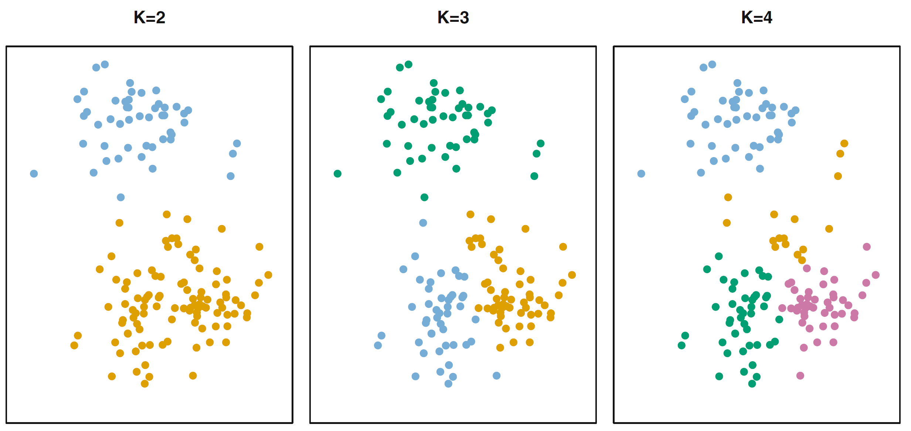
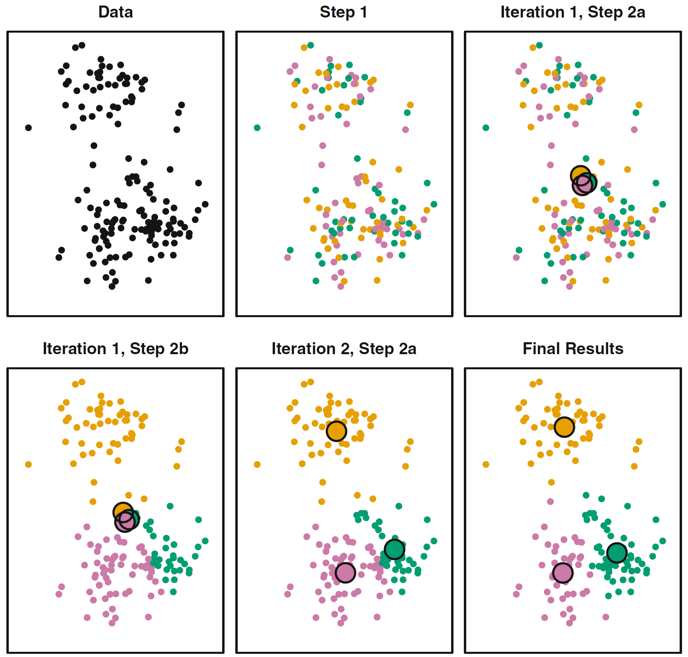
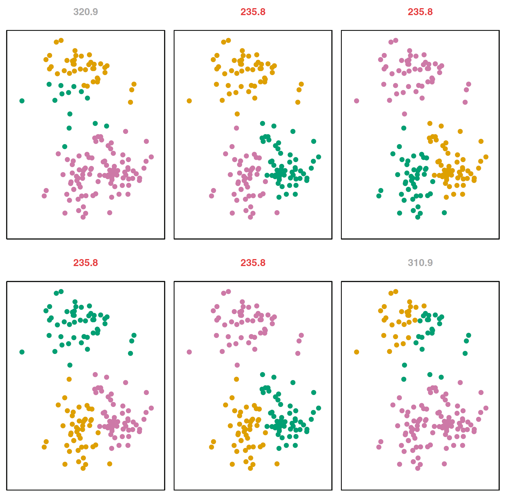
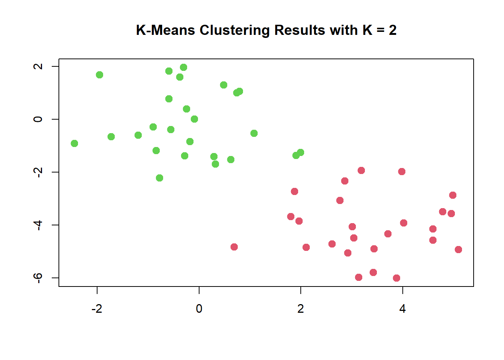
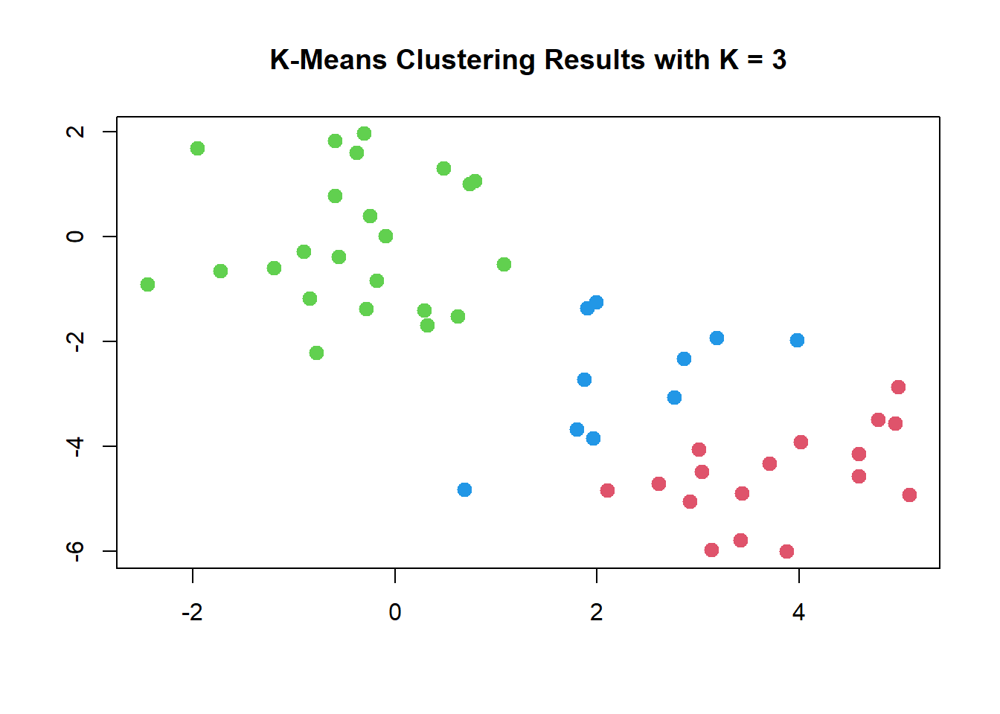

<!DOCTYPE html>
<html lang="es" xml:lang="es">
<head>

  <meta charset="utf-8" />
  <meta http-equiv="X-UA-Compatible" content="IE=edge" />
  <title>Capítulo 12 Analisis de clusters | Ciencia de Datos</title>
  <meta name="description" content="BCRA" />
  <meta name="generator" content="bookdown 0.33 and GitBook 2.6.7" />

  <meta property="og:title" content="Capítulo 12 Analisis de clusters | Ciencia de Datos" />
  <meta property="og:type" content="book" />
  
  <meta property="og:description" content="BCRA" />
  <meta name="github-repo" content="msangia/msangia.github" />

  <meta name="twitter:card" content="summary" />
  <meta name="twitter:title" content="Capítulo 12 Analisis de clusters | Ciencia de Datos" />
  <meta name="twitter:site" content="@msangia" />
  <meta name="twitter:description" content="BCRA" />
  

<meta name="author" content="Máximo Sangiácomo" />


  <meta name="viewport" content="width=device-width, initial-scale=1" />
  <meta name="apple-mobile-web-app-capable" content="yes" />
  <meta name="apple-mobile-web-app-status-bar-style" content="black" />
  
  
<link rel="prev" href="nnet.html"/>
<link rel="next" href="bibliografia-1.html"/>
<script src="libs/jquery-3.6.0/jquery-3.6.0.min.js"></script>
<script src="https://cdn.jsdelivr.net/npm/fuse.js@6.4.6/dist/fuse.min.js"></script>
<link href="libs/gitbook-2.6.7/css/style.css" rel="stylesheet" />
<link href="libs/gitbook-2.6.7/css/plugin-table.css" rel="stylesheet" />
<link href="libs/gitbook-2.6.7/css/plugin-bookdown.css" rel="stylesheet" />
<link href="libs/gitbook-2.6.7/css/plugin-highlight.css" rel="stylesheet" />
<link href="libs/gitbook-2.6.7/css/plugin-search.css" rel="stylesheet" />
<link href="libs/gitbook-2.6.7/css/plugin-fontsettings.css" rel="stylesheet" />
<link href="libs/gitbook-2.6.7/css/plugin-clipboard.css" rel="stylesheet" />


<link href="libs/anchor-sections-1.1.0/anchor-sections.css" rel="stylesheet" />
<link href="libs/anchor-sections-1.1.0/anchor-sections-hash.css" rel="stylesheet" />
<script src="libs/anchor-sections-1.1.0/anchor-sections.js"></script>
<html>
  <head>
	<link rel="shortcut icon" href="images/favicon.png" />
  </head>
  <body>
  </body>
</html>


<style type="text/css">
pre > code.sourceCode { white-space: pre; position: relative; }
pre > code.sourceCode > span { display: inline-block; line-height: 1.25; }
pre > code.sourceCode > span:empty { height: 1.2em; }
.sourceCode { overflow: visible; }
code.sourceCode > span { color: inherit; text-decoration: inherit; }
pre.sourceCode { margin: 0; }
@media screen {
div.sourceCode { overflow: auto; }
}
@media print {
pre > code.sourceCode { white-space: pre-wrap; }
pre > code.sourceCode > span { text-indent: -5em; padding-left: 5em; }
}
pre.numberSource code
  { counter-reset: source-line 0; }
pre.numberSource code > span
  { position: relative; left: -4em; counter-increment: source-line; }
pre.numberSource code > span > a:first-child::before
  { content: counter(source-line);
    position: relative; left: -1em; text-align: right; vertical-align: baseline;
    border: none; display: inline-block;
    -webkit-touch-callout: none; -webkit-user-select: none;
    -khtml-user-select: none; -moz-user-select: none;
    -ms-user-select: none; user-select: none;
    padding: 0 4px; width: 4em;
    color: #aaaaaa;
  }
pre.numberSource { margin-left: 3em; border-left: 1px solid #aaaaaa;  padding-left: 4px; }
div.sourceCode
  {   }
@media screen {
pre > code.sourceCode > span > a:first-child::before { text-decoration: underline; }
}
code span.al { color: #ff0000; font-weight: bold; } /* Alert */
code span.an { color: #60a0b0; font-weight: bold; font-style: italic; } /* Annotation */
code span.at { color: #7d9029; } /* Attribute */
code span.bn { color: #40a070; } /* BaseN */
code span.bu { } /* BuiltIn */
code span.cf { color: #007020; font-weight: bold; } /* ControlFlow */
code span.ch { color: #4070a0; } /* Char */
code span.cn { color: #880000; } /* Constant */
code span.co { color: #60a0b0; font-style: italic; } /* Comment */
code span.cv { color: #60a0b0; font-weight: bold; font-style: italic; } /* CommentVar */
code span.do { color: #ba2121; font-style: italic; } /* Documentation */
code span.dt { color: #902000; } /* DataType */
code span.dv { color: #40a070; } /* DecVal */
code span.er { color: #ff0000; font-weight: bold; } /* Error */
code span.ex { } /* Extension */
code span.fl { color: #40a070; } /* Float */
code span.fu { color: #06287e; } /* Function */
code span.im { } /* Import */
code span.in { color: #60a0b0; font-weight: bold; font-style: italic; } /* Information */
code span.kw { color: #007020; font-weight: bold; } /* Keyword */
code span.op { color: #666666; } /* Operator */
code span.ot { color: #007020; } /* Other */
code span.pp { color: #bc7a00; } /* Preprocessor */
code span.sc { color: #4070a0; } /* SpecialChar */
code span.ss { color: #bb6688; } /* SpecialString */
code span.st { color: #4070a0; } /* String */
code span.va { color: #19177c; } /* Variable */
code span.vs { color: #4070a0; } /* VerbatimString */
code span.wa { color: #60a0b0; font-weight: bold; font-style: italic; } /* Warning */
</style>

<style type="text/css">
/* Used with Pandoc 2.11+ new --citeproc when CSL is used */
div.csl-bib-body { }
div.csl-entry {
  clear: both;
}
.hanging div.csl-entry {
  margin-left:2em;
  text-indent:-2em;
}
div.csl-left-margin {
  min-width:2em;
  float:left;
}
div.csl-right-inline {
  margin-left:2em;
  padding-left:1em;
}
div.csl-indent {
  margin-left: 2em;
}
</style>

<link rel="stylesheet" href="css/style.css" type="text/css" />
<link rel="stylesheet" href="css/r4ds.css" type="text/css" />
</head>

<body>


  <div class="book without-animation with-summary font-size-2 font-family-1" data-basepath=".">

    <div class="book-summary">
      <nav role="navigation">

<ul class="summary">
<li><a href="./">Ciencia de Datos - BCRA</a></li>

<li class="divider"></li>
<li class="chapter" data-level="" data-path="index.html"><a href="index.html"><i class="fa fa-check"></i>Descripcion del curso</a></li>
<li class="chapter" data-level="1" data-path="intro.html"><a href="intro.html"><i class="fa fa-check"></i><b>1</b> Introduccion a R</a>
<ul>
<li class="chapter" data-level="1.1" data-path="intro.html"><a href="intro.html#primeros-pasos"><i class="fa fa-check"></i><b>1.1</b> Primeros pasos</a></li>
<li class="chapter" data-level="1.2" data-path="intro.html"><a href="intro.html#busacar-ayuda"><i class="fa fa-check"></i><b>1.2</b> Busacar ayuda</a></li>
<li class="chapter" data-level="1.3" data-path="intro.html"><a href="intro.html#tipos-de-datos"><i class="fa fa-check"></i><b>1.3</b> Tipos de datos</a></li>
<li class="chapter" data-level="1.4" data-path="intro.html"><a href="intro.html#limpieza-de-memoria"><i class="fa fa-check"></i><b>1.4</b> Limpieza de memoria</a></li>
<li class="chapter" data-level="1.5" data-path="intro.html"><a href="intro.html#asignación-de-valores"><i class="fa fa-check"></i><b>1.5</b> Asignación de valores</a></li>
<li class="chapter" data-level="1.6" data-path="intro.html"><a href="intro.html#operadores-aritméticos"><i class="fa fa-check"></i><b>1.6</b> Operadores aritméticos</a></li>
<li class="chapter" data-level="1.7" data-path="intro.html"><a href="intro.html#operadores-relacionales"><i class="fa fa-check"></i><b>1.7</b> Operadores relacionales</a></li>
<li class="chapter" data-level="1.8" data-path="intro.html"><a href="intro.html#operadores-lógicos"><i class="fa fa-check"></i><b>1.8</b> Operadores lógicos</a></li>
<li class="chapter" data-level="1.9" data-path="intro.html"><a href="intro.html#vectores"><i class="fa fa-check"></i><b>1.9</b> Vectores</a></li>
<li class="chapter" data-level="1.10" data-path="intro.html"><a href="intro.html#secuencias"><i class="fa fa-check"></i><b>1.10</b> Secuencias</a></li>
<li class="chapter" data-level="1.11" data-path="intro.html"><a href="intro.html#factores"><i class="fa fa-check"></i><b>1.11</b> Factores</a></li>
<li class="chapter" data-level="1.12" data-path="intro.html"><a href="intro.html#matrices"><i class="fa fa-check"></i><b>1.12</b> Matrices</a></li>
<li class="chapter" data-level="1.13" data-path="intro.html"><a href="intro.html#listas"><i class="fa fa-check"></i><b>1.13</b> Listas</a></li>
<li class="chapter" data-level="1.14" data-path="intro.html"><a href="intro.html#data-frames"><i class="fa fa-check"></i><b>1.14</b> Data frames</a></li>
<li class="chapter" data-level="1.15" data-path="intro.html"><a href="intro.html#r-base"><i class="fa fa-check"></i><b>1.15</b> R base</a></li>
<li class="chapter" data-level="1.16" data-path="intro.html"><a href="intro.html#apply-y-tapply"><i class="fa fa-check"></i><b>1.16</b> Apply y tapply</a></li>
<li class="chapter" data-level="1.17" data-path="intro.html"><a href="intro.html#map"><i class="fa fa-check"></i><b>1.17</b> Map</a></li>
<li class="chapter" data-level="1.18" data-path="intro.html"><a href="intro.html#loops"><i class="fa fa-check"></i><b>1.18</b> Loops</a></li>
<li class="chapter" data-level="1.19" data-path="intro.html"><a href="intro.html#condicionales"><i class="fa fa-check"></i><b>1.19</b> Condicionales</a></li>
<li class="chapter" data-level="1.20" data-path="intro.html"><a href="intro.html#funciones"><i class="fa fa-check"></i><b>1.20</b> Funciones</a>
<ul>
<li class="chapter" data-level="1.20.1" data-path="intro.html"><a href="intro.html#output-más-de-un-resultado"><i class="fa fa-check"></i><b>1.20.1</b> Output más de un resultado</a></li>
<li class="chapter" data-level="1.20.2" data-path="intro.html"><a href="intro.html#argumentos-con-valores-default"><i class="fa fa-check"></i><b>1.20.2</b> Argumentos con valores default</a></li>
</ul></li>
</ul></li>
<li class="chapter" data-level="2" data-path="bd.html"><a href="bd.html"><i class="fa fa-check"></i><b>2</b> Base de datos</a>
<ul>
<li class="chapter" data-level="2.1" data-path="bd.html"><a href="bd.html#directorio-de-trabajo"><i class="fa fa-check"></i><b>2.1</b> Directorio de trabajo</a></li>
<li class="chapter" data-level="2.2" data-path="bd.html"><a href="bd.html#cargar-datos"><i class="fa fa-check"></i><b>2.2</b> Cargar datos</a>
<ul>
<li class="chapter" data-level="2.2.1" data-path="bd.html"><a href="bd.html#ingrasar-datos-con-tidyverse"><i class="fa fa-check"></i><b>2.2.1</b> Ingrasar datos con <code>tidyverse</code></a></li>
<li class="chapter" data-level="2.2.2" data-path="bd.html"><a href="bd.html#bases-de-stata"><i class="fa fa-check"></i><b>2.2.2</b> Bases de Stata</a></li>
</ul></li>
<li class="chapter" data-level="2.3" data-path="bd.html"><a href="bd.html#problemas-de-imputación"><i class="fa fa-check"></i><b>2.3</b> Problemas de imputación</a></li>
<li class="chapter" data-level="2.4" data-path="bd.html"><a href="bd.html#exportar-datos"><i class="fa fa-check"></i><b>2.4</b> Exportar datos</a></li>
<li class="chapter" data-level="2.5" data-path="bd.html"><a href="bd.html#pipe"><i class="fa fa-check"></i><b>2.5</b> Pipe</a></li>
<li class="chapter" data-level="2.6" data-path="bd.html"><a href="bd.html#variables"><i class="fa fa-check"></i><b>2.6</b> Variables</a></li>
<li class="chapter" data-level="2.7" data-path="bd.html"><a href="bd.html#merge"><i class="fa fa-check"></i><b>2.7</b> Merge</a></li>
<li class="chapter" data-level="2.8" data-path="bd.html"><a href="bd.html#variables-group_by-mutate"><i class="fa fa-check"></i><b>2.8</b> Variables: group_by, mutate</a></li>
<li class="chapter" data-level="2.9" data-path="bd.html"><a href="bd.html#guardar-datos"><i class="fa fa-check"></i><b>2.9</b> Guardar datos</a></li>
<li class="chapter" data-level="2.10" data-path="bd.html"><a href="bd.html#valores-missing"><i class="fa fa-check"></i><b>2.10</b> Valores missing</a>
<ul>
<li class="chapter" data-level="2.10.1" data-path="bd.html"><a href="bd.html#eliminar-valores-missing"><i class="fa fa-check"></i><b>2.10.1</b> Eliminar valores missing</a></li>
</ul></li>
<li class="chapter" data-level="2.11" data-path="bd.html"><a href="bd.html#loop"><i class="fa fa-check"></i><b>2.11</b> Loop</a></li>
<li class="chapter" data-level="2.12" data-path="bd.html"><a href="bd.html#pivot-reshape"><i class="fa fa-check"></i><b>2.12</b> Pivot (Reshape)</a></li>
<li class="chapter" data-level="2.13" data-path="bd.html"><a href="bd.html#row-bind-append"><i class="fa fa-check"></i><b>2.13</b> Row bind (Append)</a></li>
<li class="chapter" data-level="2.14" data-path="bd.html"><a href="bd.html#strings"><i class="fa fa-check"></i><b>2.14</b> Strings</a></li>
<li class="chapter" data-level="2.15" data-path="bd.html"><a href="bd.html#fechas"><i class="fa fa-check"></i><b>2.15</b> Fechas</a>
<ul>
<li class="chapter" data-level="2.15.1" data-path="bd.html"><a href="bd.html#manipulación-de-fechas"><i class="fa fa-check"></i><b>2.15.1</b> Manipulación de fechas</a></li>
</ul></li>
<li class="chapter" data-level="2.16" data-path="bd.html"><a href="bd.html#análisis-de-datos"><i class="fa fa-check"></i><b>2.16</b> Análisis de datos</a>
<ul>
<li class="chapter" data-level="2.16.1" data-path="bd.html"><a href="bd.html#tablas"><i class="fa fa-check"></i><b>2.16.1</b> Tablas</a></li>
</ul></li>
<li class="chapter" data-level="2.17" data-path="bd.html"><a href="bd.html#group_by-summarise"><i class="fa fa-check"></i><b>2.17</b> group_by, summarise</a></li>
<li class="chapter" data-level="2.18" data-path="bd.html"><a href="bd.html#vector-de-resultados"><i class="fa fa-check"></i><b>2.18</b> Vector de resultados</a></li>
</ul></li>
<li class="chapter" data-level="3" data-path="gph1.html"><a href="gph1.html"><i class="fa fa-check"></i><b>3</b> Gráficos - Parte I</a>
<ul>
<li class="chapter" data-level="3.1" data-path="gph1.html"><a href="gph1.html#ggplot2"><i class="fa fa-check"></i><b>3.1</b> ggplot2</a></li>
<li class="chapter" data-level="3.2" data-path="gph1.html"><a href="gph1.html#estadísticas-con-ggplot2"><i class="fa fa-check"></i><b>3.2</b> Estadísticas con <code>ggplot2</code></a></li>
<li class="chapter" data-level="3.3" data-path="gph1.html"><a href="gph1.html#ggplot-position"><i class="fa fa-check"></i><b>3.3</b> GGPlot (position)</a></li>
<li class="chapter" data-level="3.4" data-path="gph1.html"><a href="gph1.html#time-series"><i class="fa fa-check"></i><b>3.4</b> Time series</a></li>
<li class="chapter" data-level="3.5" data-path="gph1.html"><a href="gph1.html#labels"><i class="fa fa-check"></i><b>3.5</b> Labels</a></li>
<li class="chapter" data-level="3.6" data-path="gph1.html"><a href="gph1.html#orden-de-factores-en-los-ejes-variables-string"><i class="fa fa-check"></i><b>3.6</b> Orden de factores en los ejes (variables string)</a></li>
<li class="chapter" data-level="3.7" data-path="gph1.html"><a href="gph1.html#guardar-un-gráfico"><i class="fa fa-check"></i><b>3.7</b> Guardar un gráfico</a></li>
</ul></li>
<li class="chapter" data-level="4" data-path="gph2.html"><a href="gph2.html"><i class="fa fa-check"></i><b>4</b> Gráficos - Parte II</a>
<ul>
<li class="chapter" data-level="4.1" data-path="gph2.html"><a href="gph2.html#títulos-en-los-ejes"><i class="fa fa-check"></i><b>4.1</b> Títulos en los ejes</a></li>
<li class="chapter" data-level="4.2" data-path="gph2.html"><a href="gph2.html#orden-de-los-graficos"><i class="fa fa-check"></i><b>4.2</b> Orden de los graficos</a></li>
<li class="chapter" data-level="4.3" data-path="gph2.html"><a href="gph2.html#agrandar-una-parte-del-grafico"><i class="fa fa-check"></i><b>4.3</b> Agrandar una parte del grafico</a></li>
<li class="chapter" data-level="4.4" data-path="gph2.html"><a href="gph2.html#escala-de-colores-manual"><i class="fa fa-check"></i><b>4.4</b> Escala de colores manual</a></li>
<li class="chapter" data-level="4.5" data-path="gph2.html"><a href="gph2.html#límites-epacios-y-etiquetas"><i class="fa fa-check"></i><b>4.5</b> Límites, epacios y etiquetas</a></li>
<li class="chapter" data-level="4.6" data-path="gph2.html"><a href="gph2.html#leyendas"><i class="fa fa-check"></i><b>4.6</b> Leyendas</a></li>
<li class="chapter" data-level="4.7" data-path="gph2.html"><a href="gph2.html#posición-de-la-leyenda"><i class="fa fa-check"></i><b>4.7</b> Posición de la leyenda</a></li>
<li class="chapter" data-level="4.8" data-path="gph2.html"><a href="gph2.html#estadísticas"><i class="fa fa-check"></i><b>4.8</b> Estadísticas</a></li>
<li class="chapter" data-level="4.9" data-path="gph2.html"><a href="gph2.html#unir-leyendas"><i class="fa fa-check"></i><b>4.9</b> Unir leyendas</a></li>
<li class="chapter" data-level="4.10" data-path="gph2.html"><a href="gph2.html#separar-leyendas"><i class="fa fa-check"></i><b>4.10</b> Separar leyendas</a></li>
<li class="chapter" data-level="4.11" data-path="gph2.html"><a href="gph2.html#agrupar-y-desagrupar"><i class="fa fa-check"></i><b>4.11</b> Agrupar y desagrupar</a></li>
<li class="chapter" data-level="4.12" data-path="gph2.html"><a href="gph2.html#themes"><i class="fa fa-check"></i><b>4.12</b> Themes</a></li>
</ul></li>
<li class="chapter" data-level="5" data-path="rmd.html"><a href="rmd.html"><i class="fa fa-check"></i><b>5</b> R Markdown</a>
<ul>
<li class="chapter" data-level="5.1" data-path="rmd.html"><a href="rmd.html#informes-con-r-markdown"><i class="fa fa-check"></i><b>5.1</b> Informes con R Markdown</a>
<ul>
<li class="chapter" data-level="5.1.1" data-path="rmd.html"><a href="rmd.html#intrormd"><i class="fa fa-check"></i><b>5.1.1</b> Introduccion</a></li>
<li class="chapter" data-level="5.1.2" data-path="rmd.html"><a href="rmd.html#referencias-cruzadas"><i class="fa fa-check"></i><b>5.1.2</b> Referencias cruzadas</a></li>
<li class="chapter" data-level="5.1.3" data-path="rmd.html"><a href="rmd.html#regresion"><i class="fa fa-check"></i><b>5.1.3</b> Regresion</a></li>
<li class="chapter" data-level="5.1.4" data-path="rmd.html"><a href="rmd.html#bullets"><i class="fa fa-check"></i><b>5.1.4</b> Bullets</a></li>
<li class="chapter" data-level="" data-path="rmd.html"><a href="rmd.html#bibliografia"><i class="fa fa-check"></i>Bibliografia</a></li>
</ul></li>
</ul></li>
<li class="chapter" data-level="6" data-path="conceptos.html"><a href="conceptos.html"><i class="fa fa-check"></i><b>6</b> Conceptos generales</a>
<ul>
<li class="chapter" data-level="6.1" data-path="conceptos.html"><a href="conceptos.html#estimacion"><i class="fa fa-check"></i><b>6.1</b> Estimacion</a></li>
<li class="chapter" data-level="6.2" data-path="conceptos.html"><a href="conceptos.html#prediccion"><i class="fa fa-check"></i><b>6.2</b> Prediccion</a></li>
<li class="chapter" data-level="6.3" data-path="conceptos.html"><a href="conceptos.html#inferencia"><i class="fa fa-check"></i><b>6.3</b> Inferencia</a></li>
<li class="chapter" data-level="6.4" data-path="conceptos.html"><a href="conceptos.html#metodos-parametricos"><i class="fa fa-check"></i><b>6.4</b> Metodos parametricos</a></li>
<li class="chapter" data-level="6.5" data-path="conceptos.html"><a href="conceptos.html#metodos-no-parametricos"><i class="fa fa-check"></i><b>6.5</b> Metodos no parametricos</a></li>
<li class="chapter" data-level="6.6" data-path="conceptos.html"><a href="conceptos.html#evaluacion-de-la-precision-del-modelo"><i class="fa fa-check"></i><b>6.6</b> Evaluacion de la precision del modelo</a>
<ul>
<li class="chapter" data-level="6.6.1" data-path="conceptos.html"><a href="conceptos.html#ajuste"><i class="fa fa-check"></i><b>6.6.1</b> Calidad del ajuste</a></li>
<li class="chapter" data-level="6.6.2" data-path="conceptos.html"><a href="conceptos.html#trade-off-sesgo-varianza"><i class="fa fa-check"></i><b>6.6.2</b> Trade-off Sesgo-Varianza</a></li>
<li class="chapter" data-level="6.6.3" data-path="conceptos.html"><a href="conceptos.html#clasificacion"><i class="fa fa-check"></i><b>6.6.3</b> Clasificacion</a></li>
<li class="chapter" data-level="6.6.4" data-path="conceptos.html"><a href="conceptos.html#confusion"><i class="fa fa-check"></i><b>6.6.4</b> Matriz de confusion</a></li>
<li class="chapter" data-level="6.6.5" data-path="conceptos.html"><a href="conceptos.html#roc"><i class="fa fa-check"></i><b>6.6.5</b> Curva ROC</a></li>
</ul></li>
<li class="chapter" data-level="6.7" data-path="conceptos.html"><a href="conceptos.html#resampling-methods"><i class="fa fa-check"></i><b>6.7</b> Resampling Methods</a>
<ul>
<li class="chapter" data-level="6.7.1" data-path="conceptos.html"><a href="conceptos.html#cv"><i class="fa fa-check"></i><b>6.7.1</b> Cross Validation</a></li>
<li class="chapter" data-level="6.7.2" data-path="conceptos.html"><a href="conceptos.html#bootstrap"><i class="fa fa-check"></i><b>6.7.2</b> Bootstrap</a></li>
</ul></li>
<li class="chapter" data-level="6.8" data-path="conceptos.html"><a href="conceptos.html#resumen"><i class="fa fa-check"></i><b>6.8</b> Resumen</a></li>
</ul></li>
<li class="chapter" data-level="7" data-path="mco.html"><a href="mco.html"><i class="fa fa-check"></i><b>7</b> Regresion lineal</a>
<ul>
<li class="chapter" data-level="7.1" data-path="mco.html"><a href="mco.html#relacion-entre-estimacion-optima-y-prediccion-optima"><i class="fa fa-check"></i><b>7.1</b> Relacion entre estimacion optima y prediccion optima</a></li>
<li class="chapter" data-level="7.2" data-path="mco.html"><a href="mco.html#aplicacion-practica"><i class="fa fa-check"></i><b>7.2</b> Aplicacion practica</a></li>
</ul></li>
<li class="chapter" data-level="8" data-path="shrinkage-methods.html"><a href="shrinkage-methods.html"><i class="fa fa-check"></i><b>8</b> Shrinkage Methods</a>
<ul>
<li class="chapter" data-level="8.1" data-path="shrinkage-methods.html"><a href="shrinkage-methods.html#lasso"><i class="fa fa-check"></i><b>8.1</b> LASSO</a></li>
<li class="chapter" data-level="8.2" data-path="shrinkage-methods.html"><a href="shrinkage-methods.html#ridge"><i class="fa fa-check"></i><b>8.2</b> <em>Ridge</em></a></li>
<li class="chapter" data-level="8.3" data-path="shrinkage-methods.html"><a href="shrinkage-methods.html#aplicacion-practica-1"><i class="fa fa-check"></i><b>8.3</b> Aplicacion practica</a></li>
</ul></li>
<li class="chapter" data-level="9" data-path="logit.html"><a href="logit.html"><i class="fa fa-check"></i><b>9</b> Logit</a>
<ul>
<li class="chapter" data-level="9.1" data-path="logit.html"><a href="logit.html#modelo-logit"><i class="fa fa-check"></i><b>9.1</b> Modelo <em>logit</em></a>
<ul>
<li class="chapter" data-level="9.1.1" data-path="logit.html"><a href="logit.html#interpretacion-de-coeficientes-en-el-modelo-logit"><i class="fa fa-check"></i><b>9.1.1</b> Interpretacion de coeficientes en el modelo <em>logit</em></a></li>
</ul></li>
<li class="chapter" data-level="9.2" data-path="logit.html"><a href="logit.html#aplicacion-practica-2"><i class="fa fa-check"></i><b>9.2</b> Aplicacion practica</a></li>
</ul></li>
<li class="chapter" data-level="10" data-path="arboles.html"><a href="arboles.html"><i class="fa fa-check"></i><b>10</b> Arboles de decision</a>
<ul>
<li class="chapter" data-level="10.1" data-path="arboles.html"><a href="arboles.html#classification-and-regression-tree-cart"><i class="fa fa-check"></i><b>10.1</b> <em>Classification and Regression Tree</em> (CART)</a></li>
<li class="chapter" data-level="10.2" data-path="arboles.html"><a href="arboles.html#bagging"><i class="fa fa-check"></i><b>10.2</b> Bagging</a></li>
<li class="chapter" data-level="10.3" data-path="arboles.html"><a href="arboles.html#random-forest"><i class="fa fa-check"></i><b>10.3</b> Random Forest</a></li>
<li class="chapter" data-level="10.4" data-path="arboles.html"><a href="arboles.html#boosting"><i class="fa fa-check"></i><b>10.4</b> Boosting</a>
<ul>
<li class="chapter" data-level="10.4.1" data-path="arboles.html"><a href="arboles.html#ada-boost"><i class="fa fa-check"></i><b>10.4.1</b> Ada Boost</a></li>
</ul></li>
<li class="chapter" data-level="10.5" data-path="arboles.html"><a href="arboles.html#aplicacion-practica-3"><i class="fa fa-check"></i><b>10.5</b> Aplicacion practica</a>
<ul>
<li class="chapter" data-level="10.5.1" data-path="arboles.html"><a href="arboles.html#arboles-de-clasificacion"><i class="fa fa-check"></i><b>10.5.1</b> Arboles de clasificacion</a></li>
<li class="chapter" data-level="10.5.2" data-path="arboles.html"><a href="arboles.html#compara"><i class="fa fa-check"></i><b>10.5.2</b> Comparacion de modelos para clasificacion</a></li>
<li class="chapter" data-level="10.5.3" data-path="arboles.html"><a href="arboles.html#grid-search"><i class="fa fa-check"></i><b>10.5.3</b> Grid search</a></li>
<li class="chapter" data-level="10.5.4" data-path="arboles.html"><a href="arboles.html#arboles-de-regresion"><i class="fa fa-check"></i><b>10.5.4</b> Arboles de regresion</a></li>
<li class="chapter" data-level="10.5.5" data-path="arboles.html"><a href="arboles.html#bagging-y-random-forests"><i class="fa fa-check"></i><b>10.5.5</b> Bagging y Random Forests</a></li>
<li class="chapter" data-level="10.5.6" data-path="arboles.html"><a href="arboles.html#boosting-1"><i class="fa fa-check"></i><b>10.5.6</b> Boosting</a></li>
</ul></li>
</ul></li>
<li class="chapter" data-level="11" data-path="nnet.html"><a href="nnet.html"><i class="fa fa-check"></i><b>11</b> Neural Networks</a>
<ul>
<li class="chapter" data-level="11.1" data-path="nnet.html"><a href="nnet.html#single-layer-neural-networks"><i class="fa fa-check"></i><b>11.1</b> Single Layer Neural Networks</a></li>
</ul></li>
<li class="chapter" data-level="12" data-path="cluster.html"><a href="cluster.html"><i class="fa fa-check"></i><b>12</b> Analisis de clusters</a>
<ul>
<li class="chapter" data-level="12.1" data-path="cluster.html"><a href="cluster.html#k-means-clustering"><i class="fa fa-check"></i><b>12.1</b> K-Means Clustering</a></li>
<li class="chapter" data-level="12.2" data-path="cluster.html"><a href="cluster.html#aplicacion-practica-4"><i class="fa fa-check"></i><b>12.2</b> Aplicacion practica</a></li>
</ul></li>
<li class="chapter" data-level="" data-path="bibliografia-1.html"><a href="bibliografia-1.html"><i class="fa fa-check"></i>Bibliografia</a></li>
<li class="divider"></li>
<li><a href="./" target="blank">Maximo Sangiacomo - GMyP</a></li>

</ul>

      </nav>
    </div>

    <div class="book-body">
      <div class="body-inner">
        <div class="book-header" role="navigation">
          <h1>
            <i class="fa fa-circle-o-notch fa-spin"></i><a href="./">Ciencia de Datos</a>
          </h1>
        </div>

        <div class="page-wrapper" tabindex="-1" role="main">
          <div class="page-inner">

            <section class="normal" id="section-">
<link href="css/style.css" rel="stylesheet">
<div class="hero-image-container"> 
  
</div>
<div id="cluster" class="section level1 hasAnchor" number="12">
<h1><span class="header-section-number">Capítulo 12</span> Analisis de clusters<a href="cluster.html#cluster" class="anchor-section" aria-label="Anchor link to header"></a></h1>
<p><em>Clustering</em> se refiere a un conjunto amplio de técnicas para encontrar subgrupos o <em>clusters</em>, en una base de datos. Cuando agrupamos las observaciones, se busca dividirlos en grupos distintos para que las observaciones dentro cada grupo sean bastante similares entre sí, mientras que las observaciones en grupos diferentes sean muy distintas entre sí. Por ello, se debe definir qué significa que dos (o más) observaciones sean similares o diferentes.</p>
<p>Si <span class="math inline">\(X\)</span> es una matriz de <span class="math inline">\(n\)</span> filas (observaciones) y <span class="math inline">\(p\)</span> columnas, cada fila es un “punto” de <span class="math inline">\(p\)</span> dimensiones y cada columna se corresponde con una variable. Por ejemplo, una base con 30 alumnos y cuatro notas de distintas materias (cada alumno es un “punto”).</p>
<p><em>Clustering</em> busca armar grupos de puntos con esos datos. Se trata de un problema <strong>no supervisado</strong> porque se trata de descubrir estructura, grupos distintos, en base a los datos. Esto es útil, por ejemplo, para segmentación de mercado.</p>
<p><strong><em>Dissimilarity</em></strong></p>
<p>Suponer dos puntos <span class="math inline">\(x, z \in \Re^p\)</span>. ¿Cuán disímiles son <span class="math inline">\(x\)</span> y <span class="math inline">\(z\)</span>, con <span class="math inline">\(p\)</span> coordenadas cada uno?</p>
<p>En el caso de variables cuantitativas la distancia euclídea<a href="#fn33" class="footnote-ref" id="fnref33"><sup>33</sup></a> es:</p>
<p><span class="math display" id="eq:dist">\[\begin{equation}
\tag{12.1}
   d(x,z) = [\sum_{j=1}^{p} (x_j - z_j)^{2}]^{\frac{1}{2}}
\end{equation}\]</span></p>
<p><strong>Definición: <em>Dissimilarity Matrix</em></strong></p>
<p>Si <span class="math inline">\(D\)</span> es una matriz <span class="math inline">\(N \times N\)</span> donde <span class="math inline">\(D_{ij} = D(x_i, x_j)\)</span> es el <em>input</em> del análisis de <em>clusters</em>. Idealmente las <span class="math inline">\(D_{ij}\)</span> son verdaderas distancias, de modo que <span class="math inline">\(D\)</span> es simétrica y con diagonal principal nula. El análisis es muy sensible a la elección de <span class="math inline">\(D\)</span>.</p>
<p><strong><em>Cluster analysis</em></strong></p>
<p>Cada punto está indizado por <span class="math inline">\(i \in {1,...,N}\)</span> y supongamos que sabemos de antemano que hay <span class="math inline">\(K\)</span> <em>clusters</em>. A su vez, cada <em>cluster</em> está indizado por <span class="math inline">\(k \in {1,...,K}\)</span>. Entonces, un mecanismo de <em>clusters</em> asigna cada punto a un solo <em>cluster</em>. Es decir:</p>
<p><span class="math inline">\(k = C(i)\)</span>, donde <span class="math inline">\(C(i)\)</span> es un “enconder”</p>
<p><span class="math inline">\(C(i)\)</span>: <span class="math inline">\({1,...,N} \to {1,...,K}\)</span>.</p>
<p>Por lo tanto, el análisis de <em>cluster</em> busca encontrar <span class="math inline">\(C^{*}(i)\)</span> óptimo, en base a la matriz de <em>dissimilarities</em>.</p>
<p>Si se considera la siguiente función de pérdida:</p>
<p><span class="math display" id="eq:dist3">\[\begin{equation}
\tag{12.2}
   W(C) = \frac{1}{2} \sum_{k=1}^{K} [\sum_{i,j/C(i) = C(j) = k} d(x_i,x_j)]
\end{equation}\]</span></p>
<p>Intuitivamente <span class="math inline">\(W(C)\)</span> agrega las disimilitudes dentro de cada <em>cluster</em>.</p>
<p>Si se define <span class="math inline">\(T\)</span> como la disimilitud total, entre todas las observaciones (no depende de la clusterización):</p>
<p><span class="math display">\[\begin{align}
T = &amp; \frac{1}{2} \sum_{i,j} d_{i,j} \\
   = &amp; \frac{1}{2} \sum_{k=1}^{K} [\sum_{i,j/C(i) = C(j) = k} d(x_i,x_j) + \sum_{k=1}^{K} [\sum_{i,j/C(i) = C(j) \neq k} d(x_i,x_j)] \\
T  = &amp; W(C) + B(C)
\end{align}\]</span></p>
<p>Donde <span class="math inline">\(B(C)\)</span> es la agregación de las distancias <strong>entre</strong> <em>clusters</em>. Entonces, si se propone como objetivo minimizar la disimilitud dentro de los <em>clusters</em>, como <span class="math inline">\(T\)</span> esta fijo, minimizar <span class="math inline">\(W(C)\)</span> es equivalente a maximizar <span class="math inline">\(B(C)\)</span>.</p>
<div id="k-means-clustering" class="section level2 hasAnchor" number="12.1">
<h2><span class="header-section-number">12.1</span> K-Means Clustering<a href="cluster.html#k-means-clustering" class="anchor-section" aria-label="Anchor link to header"></a></h2>
<p>En <em>K-Means Clustering</em> se busca dividir las observaciones en un número preespecificado de grupos. Luego el algoritmo asignará cada observación a exactamente uno de los <span class="math inline">\(K\)</span> <em>clusters</em>.</p>
<p>La Figura <a href="cluster.html#fig:kmeans">12.1</a> muestra los resultados obtenidos al realizar <em>K-means clustering</em> en un ejemplo simulado con 150 observaciones en dos dimensiones utilizando tres valores diferentes de <span class="math inline">\(K\)</span>.</p>
<p><span class="math display" id="eq:kmeans">\[\begin{equation}
\tag{12.3}
   W(C) = \sum_{k=1}^{K} N_k \sum_{C(i) = k} || x_i - \overline{x}_k ||^2
\end{equation}\]</span></p>
<p>donde <span class="math inline">\(\overline{x}_k = (\overline{x}_{1k},...,\overline{x}_{pk})\)</span> es el vector de medias asociado con el <em>cluster</em> <span class="math inline">\(k\)</span> y <span class="math inline">\(N_k = \sum_{i=1}^{N} I(C(i)=k)\)</span>.</p>
<div class="figure" style="text-align: center"><span style="display:block;" id="fig:kmeans"></span>

<p class="caption">
Figura 12.1: Clusters
</p>
</div>
<p><strong>Algoritmo de <em>k-means</em>:</strong></p>
<ol style="list-style-type: decimal">
<li><p>Asignar aleatoriamente un número, del <span class="math inline">\(1\)</span> al <span class="math inline">\(K\)</span>, a cada una de las observaciones. Estos sirven como asignaciones de grupos iniciales para las observaciones.</p></li>
<li><p>Iterar hasta que las asignaciones de <em>clusters</em> dejen de cambiar.</p></li>
</ol>
<ul>
<li><p>Para cada uno de los <span class="math inline">\(K\)</span> <em>clusters</em>, calcular el centroide del <em>cluster</em>. El <em>k-ésimo</em> centroide del <em>cluster</em> es el vector de <span class="math inline">\(p\)</span> medias de atributos para las observaciones en el <em>k-ésimo cluster</em>.</p></li>
<li><p>Asignar cada observación al <em>cluster</em> cuyo centroide esté más cerca
(usando la distancia euclidiana).</p></li>
</ul>
<div class="figure" style="text-align: center"><span style="display:block;" id="fig:kmeansa"></span>

<p class="caption">
Figura 12.2: Algoritmo
</p>
</div>
<p>El mecanismo optimiza primero dentro del <em>cluster</em> (elige las medias) y luego optimiza reasignando las observaciones, dejando quietas las medias.</p>
<p>Dado que el algoritmo de <em>K-means</em> encuentra un óptimo local en lugar de un óptimo global, los resultados obtenidos dependerán de la asignación inicial (aleatoria) de <em>clusters</em> de cada observación en el paso <span class="math inline">\(1\)</span> del algoritmo. Por esta razón, es importante ejecutar el algoritmo varias veces desde diferentes puntos aleatorios iniciales. Luego se selecciona la mejor solución, es decir, aquella para la cual la ecuación <a href="cluster.html#eq:kmeans">(12.3)</a> es el más pequeño.</p>
<p>La Figura <a href="cluster.html#fig:kmeansb">12.3</a> muestra los óptimos locales obtenidos
ejecutando <em>K-means clustering</em> seis veces usando seis asignaciones iniciales diferentes.</p>
<div class="figure" style="text-align: center"><span style="display:block;" id="fig:kmeansb"></span>

<p class="caption">
Figura 12.3: Algoritmo
</p>
</div>
<p><strong>Cuestiones prácticas</strong></p>
<ul>
<li>Inicialización: puede ser en base a <em>clusters</em> o medias.</li>
<li>Número de <em>clusters</em>: No hay un mecanismo comúnmente aceptado. En algunos casos es exógeno.</li>
<li>La <em>within dissimilarity</em> <span class="math inline">\(W(C)\)</span> cae con el número de <em>clusters</em>.</li>
<li><span class="math inline">\(K\)</span> óptimo se corresponde con un quiebre en el dibujo de <span class="math inline">\(W(C)\)</span> incrementando la cantidad de <em>clusters</em> (<em>trade-off</em> sesgo-varianza determinado por cantidad de <em>clusters</em>).</li>
</ul>
</div>
<div id="aplicacion-practica-4" class="section level2 hasAnchor" number="12.2">
<h2><span class="header-section-number">12.2</span> Aplicacion practica<a href="cluster.html#aplicacion-practica-4" class="anchor-section" aria-label="Anchor link to header"></a></h2>
<p>La función <code>kmeans()</code> realiza <em>K-means clustering</em> en <code>R</code>. Comenzamos con un ejemplo simulado simple en el que realmente hay dos grupos en los datos: las primeras 25 observaciones tienen un cambio medio relativo a las siguientes 25 observaciones.</p>
<div class="sourceCode" id="cb599"><pre class="sourceCode r"><code class="sourceCode r"><span id="cb599-1"><a href="cluster.html#cb599-1" aria-hidden="true" tabindex="-1"></a><span class="fu">set.seed</span>(<span class="dv">2</span>)</span>
<span id="cb599-2"><a href="cluster.html#cb599-2" aria-hidden="true" tabindex="-1"></a>x <span class="ot">&lt;-</span> <span class="fu">matrix</span>(<span class="fu">rnorm</span>(<span class="dv">50</span> <span class="sc">*</span> <span class="dv">2</span>), <span class="at">ncol =</span> <span class="dv">2</span>)</span>
<span id="cb599-3"><a href="cluster.html#cb599-3" aria-hidden="true" tabindex="-1"></a>x[<span class="dv">1</span><span class="sc">:</span><span class="dv">25</span>, <span class="dv">1</span>] <span class="ot">&lt;-</span> x[<span class="dv">1</span><span class="sc">:</span><span class="dv">25</span>, <span class="dv">1</span>] <span class="sc">+</span> <span class="dv">3</span></span>
<span id="cb599-4"><a href="cluster.html#cb599-4" aria-hidden="true" tabindex="-1"></a>x[<span class="dv">1</span><span class="sc">:</span><span class="dv">25</span>, <span class="dv">2</span>] <span class="ot">&lt;-</span> x[<span class="dv">1</span><span class="sc">:</span><span class="dv">25</span>, <span class="dv">2</span>] <span class="sc">-</span> <span class="dv">4</span></span></code></pre></div>
<p>Ahora estimamos <em>K-means clustering</em> con <span class="math inline">\(K = 2\)</span></p>
<div class="sourceCode" id="cb600"><pre class="sourceCode r"><code class="sourceCode r"><span id="cb600-1"><a href="cluster.html#cb600-1" aria-hidden="true" tabindex="-1"></a>km.out <span class="ot">&lt;-</span> <span class="fu">kmeans</span>(x, <span class="dv">2</span>, <span class="at">nstart =</span> <span class="dv">20</span>)</span></code></pre></div>
<p>Las asignaciones de <em>clusters</em> de las 50 observaciones están contenidas en <code>km.out$cluster</code>.</p>
<div class="sourceCode" id="cb601"><pre class="sourceCode r"><code class="sourceCode r"><span id="cb601-1"><a href="cluster.html#cb601-1" aria-hidden="true" tabindex="-1"></a>km.out<span class="sc">$</span>cluster</span></code></pre></div>
<pre><code>##  [1] 1 1 1 1 1 1 1 1 1 1 1 1 1 1 1 1 1 1 1 1 1 1 1 1 1 2 2 2 2 2 2 2 2 2 2 2 2 2
## [39] 2 2 2 2 2 2 2 2 2 2 2 2</code></pre>
<p>El <em>K-means clustering</em> separó perfectamente las observaciones en dos grupos a pesar de que no proporcionamos ninguna información de grupo a <code>kmeans()</code>. Podemos graficar los datos, con cada observación
coloreada de acuerdo con su asignación de grupo.</p>
<div class="sourceCode" id="cb603"><pre class="sourceCode r"><code class="sourceCode r"><span id="cb603-1"><a href="cluster.html#cb603-1" aria-hidden="true" tabindex="-1"></a><span class="fu">plot</span>(x, <span class="at">col =</span> (km.out<span class="sc">$</span>cluster <span class="sc">+</span> <span class="dv">1</span>),</span>
<span id="cb603-2"><a href="cluster.html#cb603-2" aria-hidden="true" tabindex="-1"></a>    <span class="at">main =</span> <span class="st">&quot;K-Means Clustering Results with K = 2&quot;</span>,</span>
<span id="cb603-3"><a href="cluster.html#cb603-3" aria-hidden="true" tabindex="-1"></a>    <span class="at">xlab =</span> <span class="st">&quot;&quot;</span>, <span class="at">ylab =</span> <span class="st">&quot;&quot;</span>, <span class="at">pch =</span> <span class="dv">20</span>, <span class="at">cex =</span> <span class="dv">2</span>)</span></code></pre></div>
<p></p>
<p>En este ejemplo, sabíamos que realmente había dos <em>clusteres</em> porque generamos los datos. Sin embargo, para datos reales, en general no
se conoce el verdadero número de <em>clusters</em>. Podríamos haber realizado <em>K-means clustering</em> en este ejemplo con <span class="math inline">\(K = 3\)</span>.</p>
<div class="sourceCode" id="cb604"><pre class="sourceCode r"><code class="sourceCode r"><span id="cb604-1"><a href="cluster.html#cb604-1" aria-hidden="true" tabindex="-1"></a><span class="fu">set.seed</span>(<span class="dv">4</span>)</span>
<span id="cb604-2"><a href="cluster.html#cb604-2" aria-hidden="true" tabindex="-1"></a>km.out <span class="ot">&lt;-</span> <span class="fu">kmeans</span>(x, <span class="dv">3</span>, <span class="at">nstart =</span> <span class="dv">20</span>)</span>
<span id="cb604-3"><a href="cluster.html#cb604-3" aria-hidden="true" tabindex="-1"></a>km.out</span></code></pre></div>
<pre><code>## K-means clustering with 3 clusters of sizes 17, 23, 10
## 
## Cluster means:
##         [,1]        [,2]
## 1  3.7789567 -4.56200798
## 2 -0.3820397 -0.08740753
## 3  2.3001545 -2.69622023
## 
## Clustering vector:
##  [1] 1 3 1 3 1 1 1 3 1 3 1 3 1 3 1 3 1 1 1 1 1 3 1 1 1 2 2 2 2 2 2 2 2 2 2 2 2 2
## [39] 2 2 2 2 2 3 2 3 2 2 2 2
## 
## Within cluster sum of squares by cluster:
## [1] 25.74089 52.67700 19.56137
##  (between_SS / total_SS =  79.3 %)
## 
## Available components:
## 
## [1] &quot;cluster&quot;      &quot;centers&quot;      &quot;totss&quot;        &quot;withinss&quot;     &quot;tot.withinss&quot;
## [6] &quot;betweenss&quot;    &quot;size&quot;         &quot;iter&quot;         &quot;ifault&quot;</code></pre>
<div class="sourceCode" id="cb606"><pre class="sourceCode r"><code class="sourceCode r"><span id="cb606-1"><a href="cluster.html#cb606-1" aria-hidden="true" tabindex="-1"></a><span class="fu">plot</span>(x, <span class="at">col =</span> (km.out<span class="sc">$</span>cluster <span class="sc">+</span> <span class="dv">1</span>),</span>
<span id="cb606-2"><a href="cluster.html#cb606-2" aria-hidden="true" tabindex="-1"></a>    <span class="at">main =</span> <span class="st">&quot;K-Means Clustering Results with K = 3&quot;</span>,</span>
<span id="cb606-3"><a href="cluster.html#cb606-3" aria-hidden="true" tabindex="-1"></a>    <span class="at">xlab =</span> <span class="st">&quot;&quot;</span>, <span class="at">ylab =</span> <span class="st">&quot;&quot;</span>, <span class="at">pch =</span> <span class="dv">20</span>, <span class="at">cex =</span> <span class="dv">2</span>)</span></code></pre></div>
<p></p>
<p>Cuando <span class="math inline">\(K=3\)</span>, <em>K-means clustering</em> divide los dos grupos.</p>
<p>Para ejecutar la función <code>kmeans()</code> en <code>R</code> con múltiples asignaciones de <em>clusteres</em> iniciales, usamos el argumento <code>nstart</code>. Si se usa un valor de <code>nstart</code> mayor que uno, entonces <em>K-means clustering</em> se realizará usando múltiples asignaciones aleatorias en el Paso 1 del algoritmo, y la función <code>kmeans()</code> reportará solo los mejores resultados. Aquí comparamos el uso de <code>nstart = 1</code> con <code>nstart = 20</code>.</p>
<div class="sourceCode" id="cb607"><pre class="sourceCode r"><code class="sourceCode r"><span id="cb607-1"><a href="cluster.html#cb607-1" aria-hidden="true" tabindex="-1"></a><span class="fu">set.seed</span>(<span class="dv">4</span>)</span>
<span id="cb607-2"><a href="cluster.html#cb607-2" aria-hidden="true" tabindex="-1"></a>km.out <span class="ot">&lt;-</span> <span class="fu">kmeans</span>(x, <span class="dv">3</span>, <span class="at">nstart =</span> <span class="dv">1</span>)</span>
<span id="cb607-3"><a href="cluster.html#cb607-3" aria-hidden="true" tabindex="-1"></a>km.out<span class="sc">$</span>tot.withinss</span></code></pre></div>
<pre><code>## [1] 104.3319</code></pre>
<div class="sourceCode" id="cb609"><pre class="sourceCode r"><code class="sourceCode r"><span id="cb609-1"><a href="cluster.html#cb609-1" aria-hidden="true" tabindex="-1"></a>km.out <span class="ot">&lt;-</span> <span class="fu">kmeans</span>(x, <span class="dv">3</span>, <span class="at">nstart =</span> <span class="dv">20</span>)</span>
<span id="cb609-2"><a href="cluster.html#cb609-2" aria-hidden="true" tabindex="-1"></a>km.out<span class="sc">$</span>tot.withinss</span></code></pre></div>
<pre><code>## [1] 97.97927</code></pre>
<p>Tener en cuenta que <code>km.out$tot.withinss</code> es la suma total de cuadrados dentro del grupo, que buscamos minimizar realizando <em>K-means clustering</em>. Las sumas de cuadrados individuales dentro del grupo están contenidas en el vector <code>km.out$withinss</code>.</p>
<p>Se recomienda ejecutar siempre <em>K-means clustering</em> con un valor grande de <code>nstart</code>, como 20 o 50, ya que de lo contrario puede obtenerse un óptimo local indeseable.</p>
<p>Al realizar un <em>K-means clustering</em>, además de utilizar varias asignaciones de agrupamiento iniciales, también es importante establecer una semilla aleatoria usando la función <code>set.seed()</code>. De esta manera, las asignaciones de grupos iniciales en el Paso 1 pueden ser replicadas y la salida de <em>K-means</em> será totalmente reproducible.</p>
</div>
</div>
<div class="footnotes">
<hr />
<ol start="33">
<li id="fn33"><p>Agrega disimilitudes para cada atributo.<a href="cluster.html#fnref33" class="footnote-back">↩︎</a></p></li>
</ol>
</div>
            </section>

          </div>
        </div>
      </div>
<a href="nnet.html" class="navigation navigation-prev " aria-label="Previous page"><i class="fa fa-angle-left"></i></a>
<a href="bibliografia-1.html" class="navigation navigation-next " aria-label="Next page"><i class="fa fa-angle-right"></i></a>
    </div>
  </div>
<script src="libs/gitbook-2.6.7/js/app.min.js"></script>
<script src="libs/gitbook-2.6.7/js/clipboard.min.js"></script>
<script src="libs/gitbook-2.6.7/js/plugin-search.js"></script>
<script src="libs/gitbook-2.6.7/js/plugin-sharing.js"></script>
<script src="libs/gitbook-2.6.7/js/plugin-fontsettings.js"></script>
<script src="libs/gitbook-2.6.7/js/plugin-bookdown.js"></script>
<script src="libs/gitbook-2.6.7/js/jquery.highlight.js"></script>
<script src="libs/gitbook-2.6.7/js/plugin-clipboard.js"></script>
<script>
gitbook.require(["gitbook"], function(gitbook) {
gitbook.start({
"sharing": {
"github": false,
"facebook": true,
"twitter": true,
"linkedin": false,
"weibo": false,
"instapaper": false,
"vk": false,
"whatsapp": false,
"all": ["facebook", "twitter", "linkedin", "weibo", "instapaper"]
},
"fontsettings": {
"theme": "white",
"family": "sans",
"size": 2
},
"edit": {
"link": null,
"text": null
},
"history": {
"link": null,
"text": null
},
"view": {
"link": null,
"text": null
},
"download": null,
"search": {
"engine": "fuse",
"options": null
},
"toc": {
"collapse": "subsection"
}
});
});
</script>

<!-- dynamically load mathjax for compatibility with self-contained -->
<script>
  (function () {
    var script = document.createElement("script");
    script.type = "text/javascript";
    var src = "true";
    if (src === "" || src === "true") src = "https://cdnjs.cloudflare.com/ajax/libs/mathjax/2.7.9/latest.js?config=TeX-MML-AM_CHTML";
    if (location.protocol !== "file:")
      if (/^https?:/.test(src))
        src = src.replace(/^https?:/, '');
    script.src = src;
    document.getElementsByTagName("head")[0].appendChild(script);
  })();
</script>
</body>

</html>
